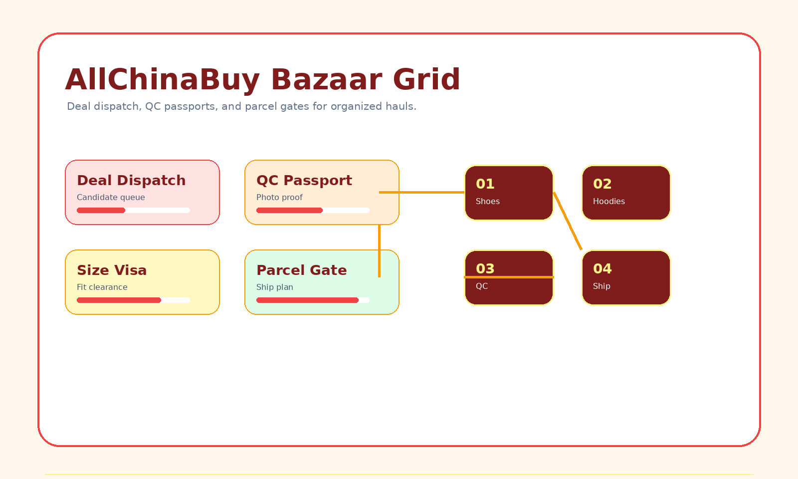

AllChinaBuy Spreadsheet works like a buyer bazaar grid: deal dispatch, QC passports, size visas, and parcel gates help you compare choices before shipping.

Each category is a stall with passport checks to confirm before the parcel gate.
footwear stalls for sneakers, runners, boots, slides, and fit-sensitive picks.
Passport: insole lengthfleece stalls, knit layers, embroidery, hood shape, and shoulder-drop checks.
Passport: chest widthgraphic tee stalls, blanks, collar checks, print position, and wash-risk basics.
Passport: print placementouterwear stalls where lining, zipper detail, sleeve length, and volume matter.
Passport: zipper closeupsdenim, cargos, track pants, shorts, waist checks, and fabric drape.
Passport: waist measurecaps, beanies, bucket hats, crown shape, embroidery, and closure hardware.
Passport: crown shapematching outfits, tracksuits, color consistency, and paired sizing decisions.
Passport: top/bottom matchbasics, socks, pack counts, comfort fabric, and light parcel fillers.
Passport: pack countkits, retro shirts, namesets, patches, sponsor prints, and badge alignment.
Passport: badge alignmentbags, belts, wallets, sunglasses, jewelry, and hardware-focused add-ons.
Passport: hardware finishseasonal extras, lifestyle pieces, desk finds, and unusual bazaar picks.
Passport: seller photosCompare candidates by stall.
Attach photo and sizing proof.
Approve only after evidence.
Ship by weight and volume.
Use gate checks to decide whether a find belongs in the current parcel.
Tees, socks, caps, and small accessories that balance unused parcel space.
Footwear and fragile items where packaging changes cost and risk.
Jackets and heavy hoodies that can force a different line.
Review every item before international shipping.
Use these extra bazaar controls before moving a find into international shipping.
Photos prove the stall details and the size visa is clear.
Fit is still uncertain and needs warehouse proof.
The version, color, or detail does not match the deal card.
The passport no longer supports the parcel gate.
A marketplace-grid workflow for organizing product candidates before submission.
Score each candidate using photos, sizing, seller signals, and parcel risk.
A warehouse-photo guide for approving, measuring, exchanging, or returning.
Sizing checks for shoes, clothing, jerseys, accessories, and sets.
Plan parcels by weight, volume, box removal, and line choice.
A practical review of AllChinaBuy from the buyer workflow perspective.
Browse current finds, stamp the passport, then ship only after the gate is clear.
Open Full Finds Directory →